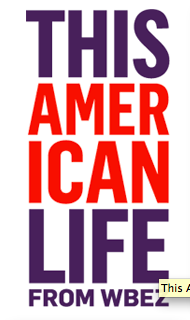

Trending
John Luther Adams
:What's the soundtrack for the end of the world? We go looking for ....
For the love of Numbers
:It’s hard to think of anything more rational, more logical and impersonal than a number. But ....
60 Words
:This hour we pull apart one sentence, written in the hours after September 11th, 2001...
Archive
Most viewed
Most heard
Invisibilia
Guts
Blackbox
Buttons not buttons
Guts
Translation
Stress
Sleep
Sleep Deprivation
The following podacasts were heard, of which one was chosen.
Planning for Uncertainity
The School
The First Elf
Jewish Santa
My First Story
Does Religion make you happy
How to fix a broken high schooler
Outsiders by design
Fixing the world
Why should you bribe your kids

The Serial
Bitter End
Are you Sure
Things
Fixing the world
Worth